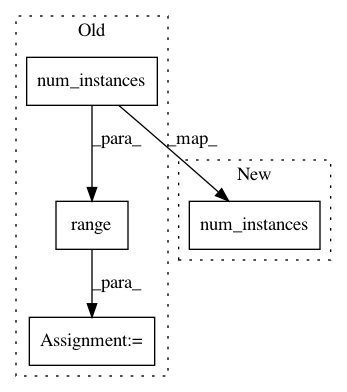

148498b564391bfd9dbc9c2b0b22db4c96df4606,secuml/core/data/features.py,Features,get_values_from_index,#Features#Any#,118
Before Change
def get_values_from_index(self, feature_index):
return [self.values[i][feature_index]
for i in range(self.instance_ids.num_instances())]
After Change
return self.values[index]
def get_values_from_index(self, feature_index):
if self.instance_ids.num_instances() == 0:
return []
else:
return self.values[:, feature_index]
In pattern: SUPERPATTERN
Frequency: 3
Non-data size: 4
Instances
Project Name: ANSSI-FR/SecuML
Commit Name: 148498b564391bfd9dbc9c2b0b22db4c96df4606
Time: 2019-03-06
Author: anael.bonneton@ssi.gouv.fr
File Name: secuml/core/data/features.py
Class Name: Features
Method Name: get_values_from_index
Project Name: ANSSI-FR/SecuML
Commit Name: 9685df29213e5943d2774f80e21564f4204823ec
Time: 2019-09-03
Author: anael.beaugnon@ssi.gouv.fr
File Name: secuml/core/data/ids.py
Class Name: Ids
Method Name: _set_idents_timetamps
Project Name: ANSSI-FR/SecuML
Commit Name: 9685df29213e5943d2774f80e21564f4204823ec
Time: 2019-09-03
Author: anael.beaugnon@ssi.gouv.fr
File Name: secuml/core/data/predictions.py
Class Name: Predictions
Method Name: _set_ranking